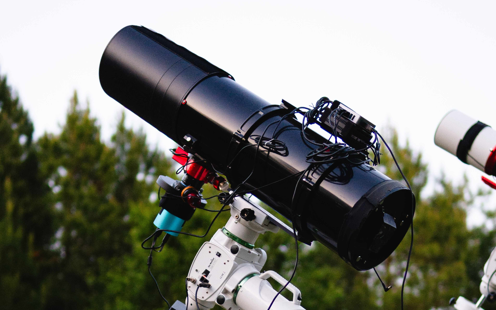
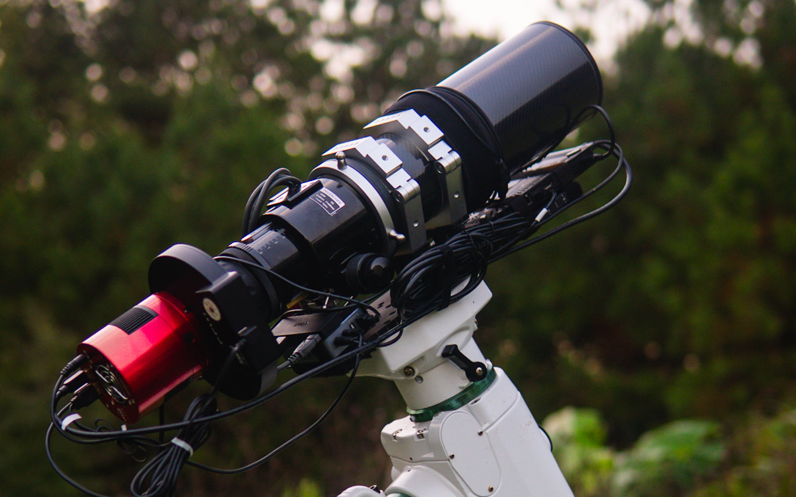
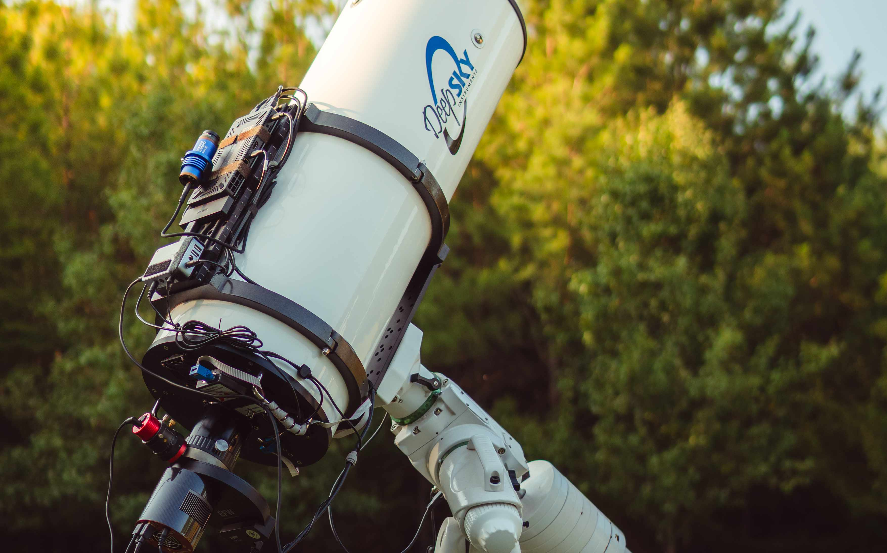
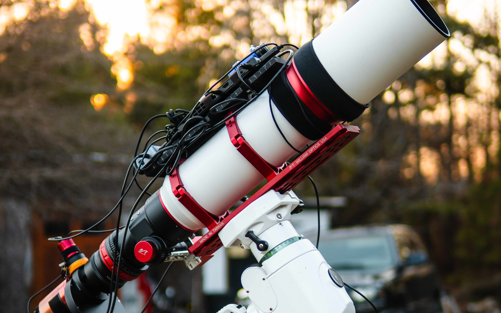
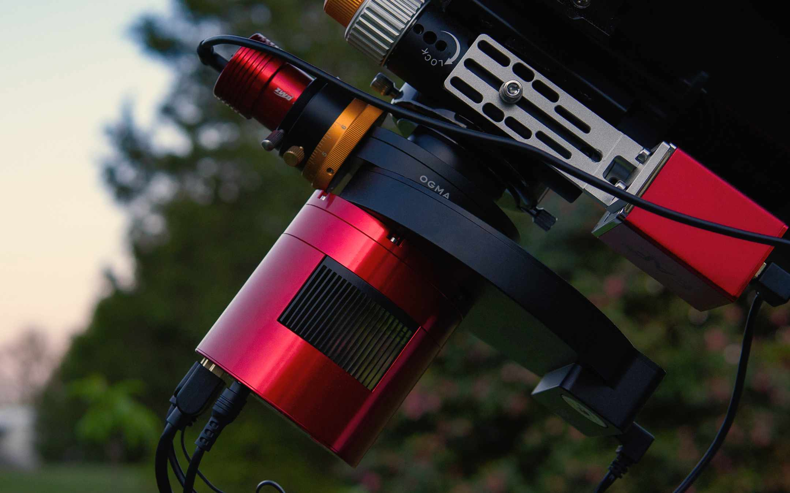
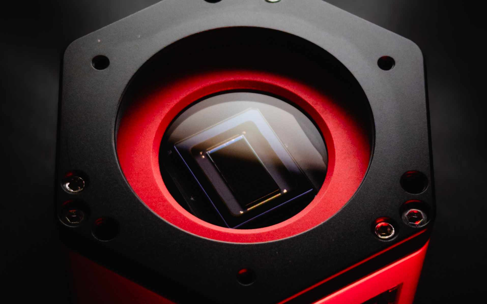
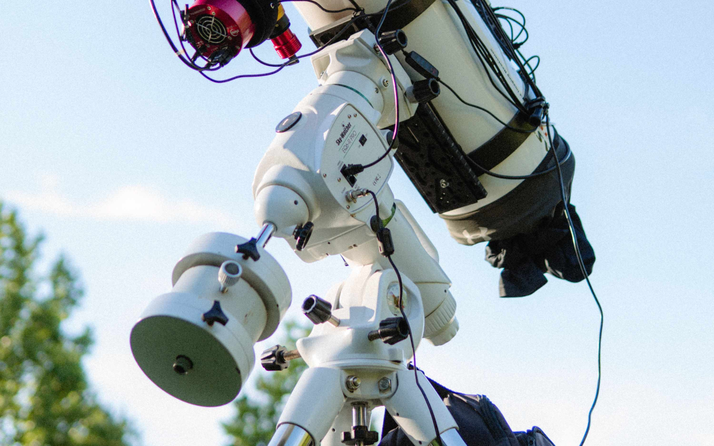
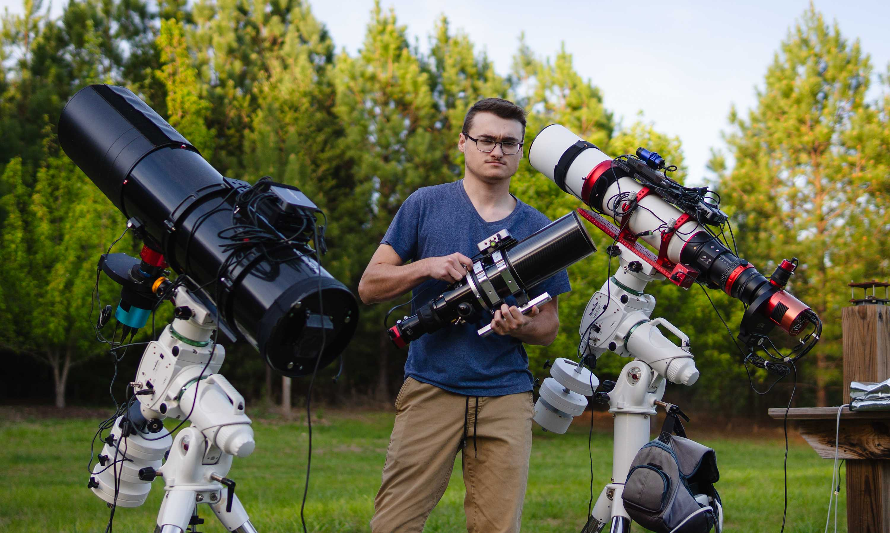

Orion 8" f3.9 Newtonian
A highly modified Synta Newtonian, featuring a CYCK R&P Focuser and CNC Spider. This scope offers 800mm's of FL at a speedy f4 focal ratio.
SELECTED WORK
The gear behind the photographs.

A highly modified Synta Newtonian, featuring a CYCK R&P Focuser and CNC Spider. This scope offers 800mm's of FL at a speedy f4 focal ratio.

A widefield 80mm refractor, excellent for massive targets like M31, or NGC7000 with it's 400mm's of FL.

A beautiful instrument, equipped with Star Instruments' 250mm 1/20th wave mirrors that bring it to an intimidating 1854mm's of FL. Fantastic for small galaxies and planetary nebulae.

This 120mm refractor, for many of the projects above, was ran side by side the Orion 8" f3.9, enabling twice the data to be collected. It's similar focal length provided a great match in FOV.

The IMX 571 offers an expansive sensor area with incredible deep sky imaging performance while not breaking the bank. It even accepts 36mm unmounted filters.

The IMX 585 is a fantastic sensor for lunar, planetary, or solar imaging. It's high sensitivity and framerate allow more effective lucky imaging.

The EQ6R from Skywatcher remains one of the best value EQ mounts in the used market. Offering 44lbs of payload capacity, periodic error correction, robust mechanics, belt driven for less backlash, and extensive community support.

I am a professional photographer by day and an amateur astrophotographer by night.
I had always had an appreciation of space, but only to the level of, "Oh cool, I can see some stars in the sky", with no idea of the hidden world that lies outside of our light polluted earth. That all changed one night in 2021. I went outside after dark with my 18-55mm kit lens, just messing around seeing how many stars I could capture, when I noticed a fuzzy patch while zooming in to the raw image. This turned out to be the Andromeda Galaxy, and well... The rest is history.
"We are a way for the universe to know itself." - Carl Sagan, Cosmos